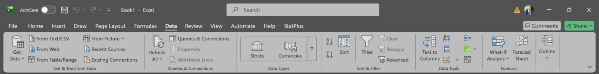
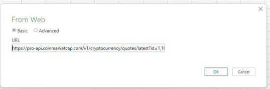
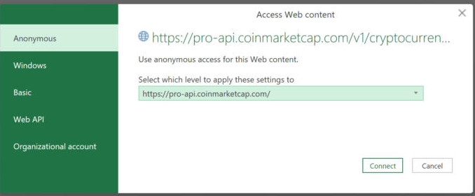
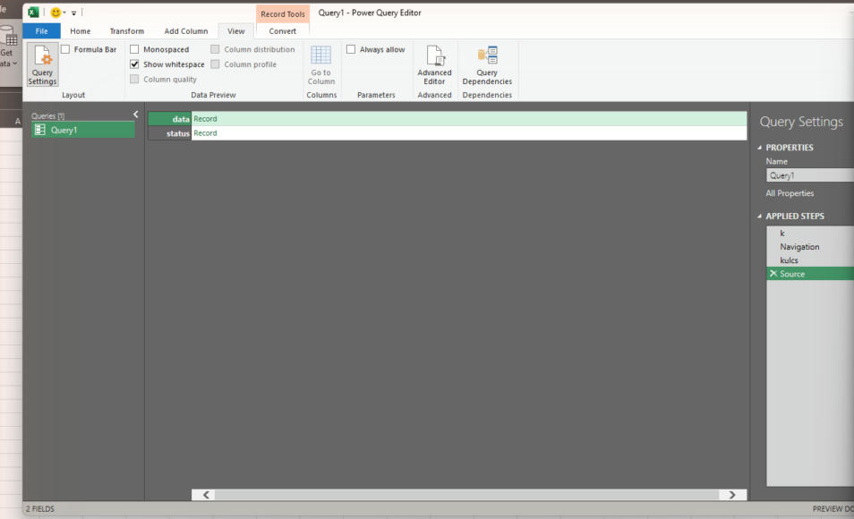
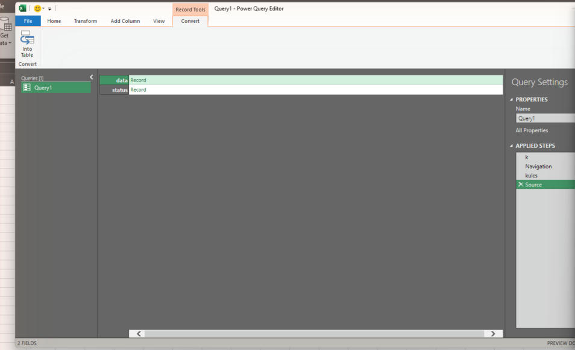
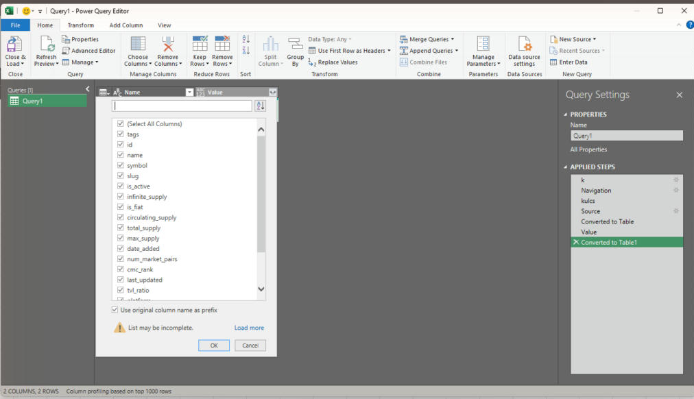
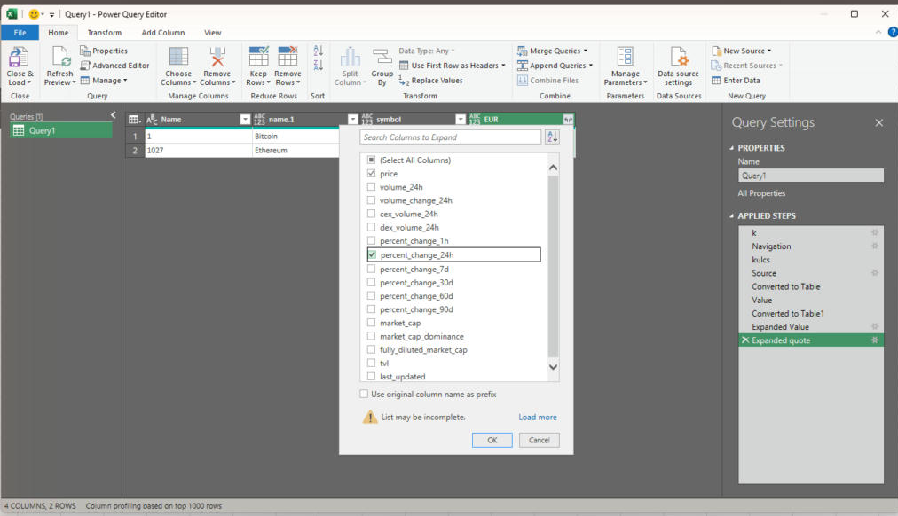
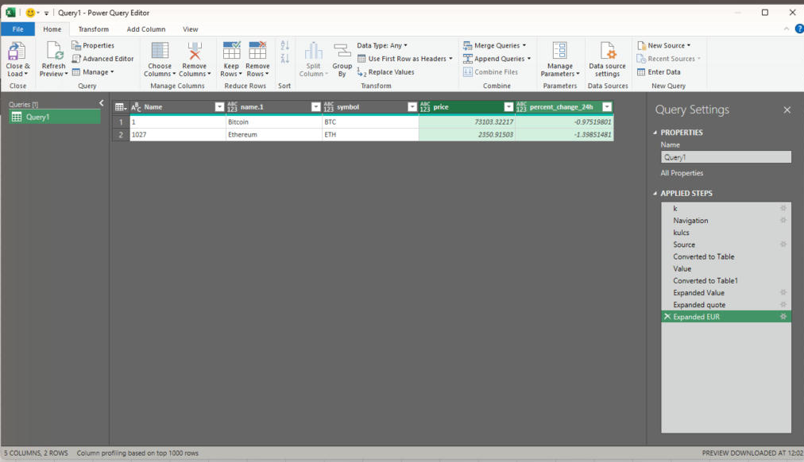
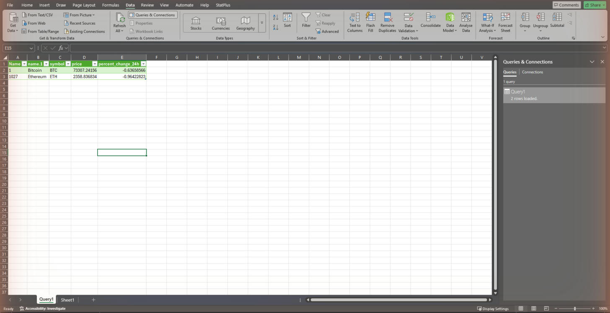
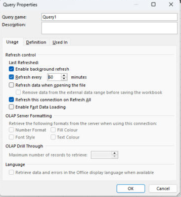

Frissülő árfolyamtábla Excelben
A Power Queryvel JSON-válaszból frissíthető táblázatot készítesz. A képernyőképek korábbi Excel-felületen mutatják a lépéseket; a gombok neve és helye verziónként eltérhet.
- az Exceled saját magától kéri le az árfolyamokat: gombnyomásra frissülő táblázatod van;
- a JSON-válaszból táblát csináltál a Power Query lépéseivel;
- tudod, hol állítod be az automatikus, időzített frissítést.
A böngészőből az Excelbe
Ugyanazt a címet, amit a böngészőbe írtál, az Excel is meg tudja hívni, és ami a böngészőben csak szöveg volt, itt élő, frissíthető táblázat lesz. Ez a Power Query: az Excel beépített adatlekérő eszköze, telepíteni nem kell semmit.
- Nyiss egy üres munkafüzetet, és a Data (Adatok) szalag bal szélén kattints közvetlenül a From Web gombra (ha nálad nincs kint, ugyanez elérhető: Get Data → From Other Sources → From Web).

Az Excel Data szalagja: balra a From Web gomb - A megnyíló ablakba illeszd be a teljes lekérdező címet (a saját kulcsoddal a végén), és kattints az OK gombra.

A From Web ablak a beillesztett API-címmel és az OK gombbal - Első kapcsolódáskor válaszd az Anonymous lehetőséget, majd Connect: ebben a példában a CMC-kulcs már a kérés címében szerepel. Ha adatvédelmi szintet kér, a nyilvános árfolyamadatok forrását Public szintre állíthatod. Több adatforrás összekapcsolásánál az adatvédelmi szinteket külön meg kell választani; az ellenőrzés kikapcsolása nem szükséges ehhez a feladathoz.

Access Web content ablak: Anonymous kiválasztva, Connect gomb - Az Excel lefuttatja a kérést, és megnyílik a Power Query szerkesztő. A válasz gyökere a
statusés adatarekordot tartalmazza; előfordulhat, hogy az újabb Excel már automatikusan táblázatos nézetet mutat. A sorok megjelenési sorrendje nem számít.
A Power Query szerkesztő a beérkezett status és data rekordokkal - Kattints felül az Into Table (Táblázatba) gombra.

Az Into Table gomb a Power Query szalag bal szélén, piros keretben - Most lépkedj lefelé az adatban: a data sor Record linkjére kattintva belépsz (két mezőt látsz: 1 és 1027), itt ismét Into Table, majd a Value oszlop fejlécén a kis széthúzó ikonnal (két nyíl) bontsd ki a mezőket.

Az oszlopkibontó lista a data tábla Value oszlopán - A kibontásnál válaszd ki, mi kell a táblába: elég a name, symbol és a quote (az árak abban vannak), aztán OK. A quote oszlopot ugyanígy bontsd ki (csak az EUR lesz benne), majd az EUR-t még egyszer: itt a price mellé pipáld be a percent_change_24h mezőt is, a többit vedd ki.

Az EUR kibontása: price és percent_change_24h bejelölve, alul az OK gomb - Ha a név, szimbólum, ár és 24 órás változás oszlopa megvan, állítsd az ár és a változás típusát Decimal Number értékre az oszlopfejléc típusikonján. Az azonosítókat tartalmazó Name oszlopot nevezd át CMC_ID-re vagy töröld; a kriptonevet tartalmazó oszlop legyen Név. Végül Close & Load.

A Close and Load gomb a Power Query szalag bal szélén - Az eredmény: élő tábla a munkalapon. Jobb oldalt a Queries & Connections panelen látod a lekérdezésedet.

A kész Excel-tábla a Bitcoin adataival és a lekérdezés-panellel
A táblában a Bitcoin és az Ethereum külön sorban áll, az ár numerikus érték. A Refresh új adatlekérést indít; az ár nem feltétlenül változik minden frissítésnél, mert a szolgáltató gyorsítótárat és saját frissítési ciklust használ.
Ha mást látsz: ha "credentials" ablak jön fel, válaszd az Anonymous lehetőséget (a kulcs a címben van, nem külön jelszóban); ha 401-es hibát kapsz, a kulcs maradt le vagy gépelődött el a cím végén.
Frissítés: gombra és magától
- Kézi frissítés: jobb kattintás a táblán → Refresh, vagy a Data menü Refresh All gombja.
- Időzített frissítés: Queries & Connections → jobb kattintás a lekérdezésen → Properties → Refresh every ... minutes: 60. Ez a nyitott munkafüzetre vonatkozik; a bezárt Excel nem futtatja a frissítést. A Refresh data when opening the file külön lehetőség a megnyitáskori frissítésre.

Query Properties: Refresh every 60 minutes bejelölve
Az ellenőrzött Basic csomag havi 15 000 kreditet és percenként legfeljebb 50 kérést enged. A saját fejlesztői portálod aktuális kerete az irányadó. Ebben a példában (két kriptovaluta, egy pénznem) egy sikeres hívás jellemzően 1 kredit. Percenként, napi 24 órában 1440 kérés történne; ez önmagában nagyjából 10-11 nap alatt elhasználná a 15 000 kreditet. Óránként, nyolc munkaórában kb. nyolc kérés történik. A külön eszközökből futó frissítések ugyanazt a kulcskeretet fogyasztják.
- Bővítsd az id-listát a Solanával:
id=1,1027,5426. Az 5426 a példában használt CMC-azonosító; az azonosító nem a tőzsdei rangsor sorszáma. Más eszközt a szolgáltató ID Map végpontjával azonosíthatsz. - Formázd meg: félkövér fejléc, ár két tizedessel, pozitív/negatív változás zöld/piros jelzéssel. A
percent_change_24hmár százalékpontban megadott szám: a 2.1 érték 2.1%-os változást jelent. A szokásos Excel százalékformátum ezt 210%-nak mutatná; vagy oszd 100-zal a formázás előtt, vagy használj egyéni0.00"%"számformátumot. - Frissíts kétszer 1 perc különbséggel, és nézd meg, melyik érték változott.
Az itt használt Power Query-lépések JSON-t adó webes API-khoz illenek. Más forrásnál eltérhet a hitelesítés, a válasz szerkezete és az átalakítás.
- A Power Query más webes adatforrásokhoz is használható, például devizaárfolyamokhoz és időjárásadatokhoz. A hitelesítést és a feldolgozást az adott API válaszformátumához kell igazítani.
- A vállalati BI-eszközök (Power BI) pontosan ezt a Power Query-t használják, tehát ezt a tudást viszed magaddal.
- A nyolcadik napon a robotod maga hívja meg ugyanezt az API-t, és az eredményt Excel-riportba írja.